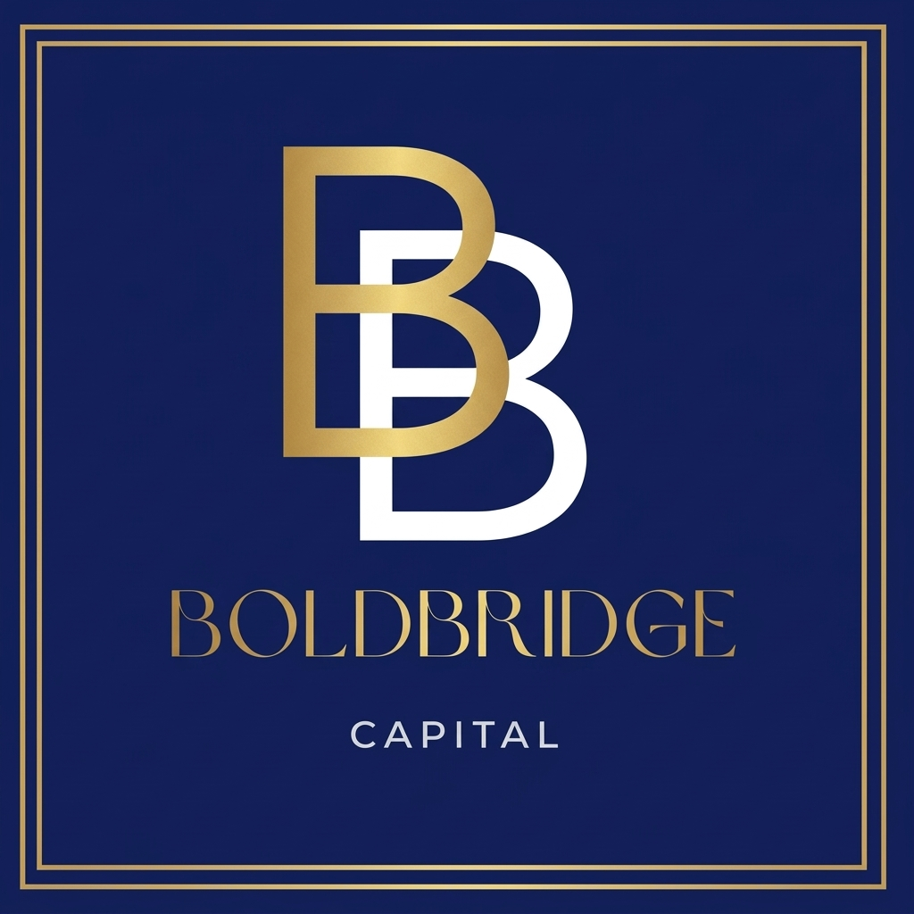

Boldbridge Capital
A UK-headquartered group founded in 2005, operating in Egypt, Saudi Arabia and the United Arab Emirates, across fibre optic cable and precast concrete manufacturing, infrastructure and engineering, smart city development and strategic investment. Led by Hany Naeem, a Forbes Business Council member with twenty-five years building infrastructure across the Middle East and Africa.
boldbridge.co.uk